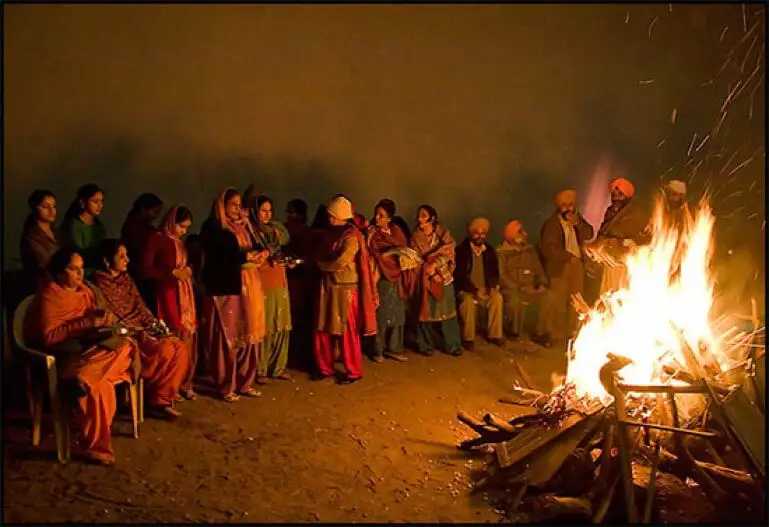
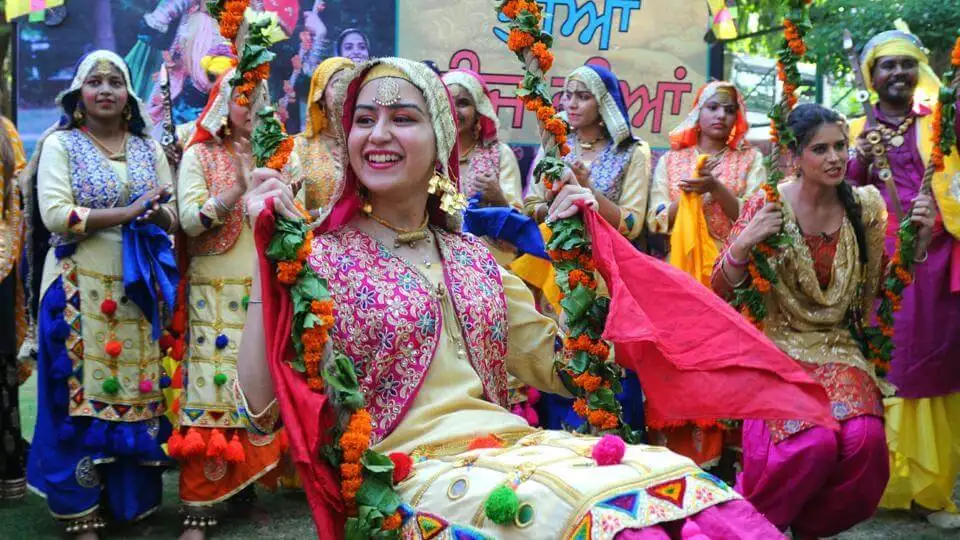
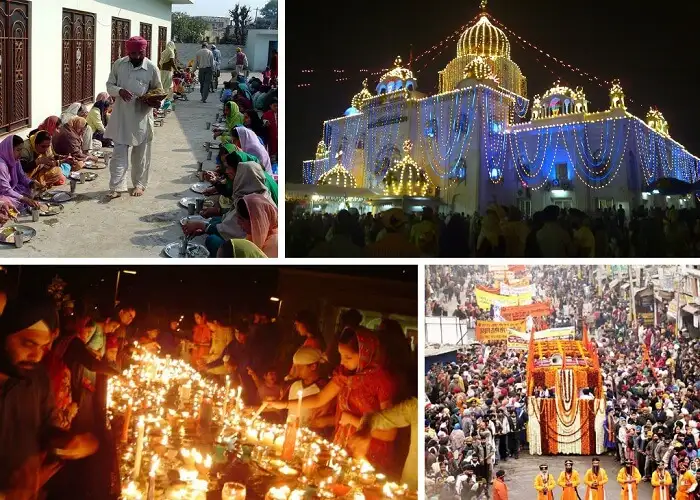

 When the mist, fog, and cold waves cast their spell on earth on the longest winter night, the sacred fire of Lohri is lit to reach the skies. Sesame seeds, jaggery, and all things that provide warmth to the human body are offered to the fire and the loud and exuberant folk music and dance of the people fill the air with festive spirit. Lohri celebration in Punjab takes place because it is believed that after Lohri, the days start to become longer and warmer. Significance: It is the winter harvest festival. It is said that the Sun God is invoked through the Lohri songs seeking warmth. The lore also has it that the day is celebrated in remembrance of the benevolent Dulla Bhatti who saved Hindu girls from being abducted by the Mughals. One of the popular themes of Lohri songs includes the mention of two girls thus saved by Dulla Bhatti named Sundari & Mundri. Key attraction: The main highlight of this important festival of Punjab is the bonfire and the folk songs and danced that take place around the fire. People go around the fire and put all the produce of the winter harvest into the fire that includes gurh, gachak, sesame seeds, and other dry fruits. The same is distributed among the people which further leads to a grand feast with a delectable table spread including traditional dishes such as Til Rice, Makki di roti, and Sarson da saag among others  Women’s dance festival, Teeyan is a festival celebrated to welcome the arrival of monsoon. Young Indian women wear shiny and colorful clothes, perform folk dances, and ride in swings tied to trees for the Teej festival in Punjab. These Teej dances along with songs show that women don’t hesitate to sacrifice their lives for their lovers and offer prayers after dances for well being of their spouses. Significance: Although the festival has gradually been modified according to the new generation, it is as significant as earlier for married women and men. Wives used to celebrate this festival at their paternal home while their husbands were away from home for work. They used to dance while praying for their husband’s safe homecoming. Key attraction: The Geedha dance, music, and swings Gurupurab – Colorful Sikh Festival  Gurupurab, one of the most important festivals of Punjab, is a matter of spirituality for the Sikhs. The Sikh community celebrates the birth anniversaries of the highly revered Sikh Gurus. The festival begins to be a religious procession with the chanting of holy hymns. People visit the Gurdwaras, offer prayers, seek blessings, and enjoy the sweet and holy langar on this auspicious Punjabi festival